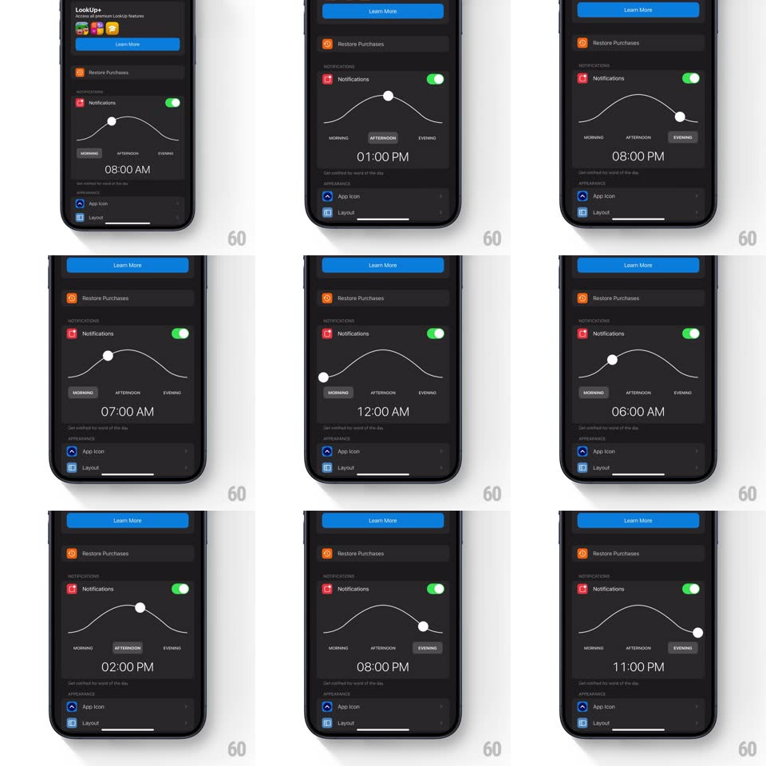

Media
Frame-by-frame

Rebuild this interaction 1:1: LookUp's notification time picker - a sine-wave curve spanning Morning to Evening with a draggable handle riding it; dragging the handle along the wave updates a big time readout (8:00 AM ... 11:00 PM) and highlights the nearest part-of-day label.

Rebuild this interaction 1:1: LookUp's notification time picker - a sine-wave curve spanning Morning to Evening with a draggable handle riding it; dragging the handle along the wave updates a big time readout (8:00 AM ... 11:00 PM) and highlights the nearest part-of-day label.
## Integration
Integration: stack-agnostic spec - springs given as stiffness/damping, timed motions as duration + curve; map every value to your framework and animation library of choice.
## Scene
Dark settings screen, Notifications section: a thin white sine curve arcing across the panel, a white circular handle riding it, MORNING / AFTERNOON / EVENING labels beneath (the active one in a dark pill), and a large gray time readout ("08:00 AM") below the curve.
## Motion spec
Pattern: wave-riding time handle.
- Drag the handle: it follows the finger's x-position while its y rides the curve exactly (sinusoidal path), with 40ms lag smoothing so it glides rather than jitters.
- The time readout updates live (15-minute steps, digits rolling, 150ms per change) and the nearest part-of-day label swaps its highlighted pill (200ms slide of the pill background).
- Release: the handle springs to the nearest 15-minute position along the curve (spring ~380/20), settling with a small bounce on the wave.
- A gentle idle hint: the handle breathes (scale 1 -> 1.08, 2s sine) until first touched.
- Haptics: a soft tick every 30 minutes of travel, a firm one when crossing a part-of-day boundary.
## Calibration
- Full sweep maps ~7 AM to 11 PM; curve amplitude ~60px.
- The readout is large (34px) and centered - it's the answer, the curve is the instrument.
## Reduced motion
Handle snaps to position; no idle breathing.
## Don't miss
- The handle is constrained TO the curve - vertical position is never free; that constraint is the entire metaphor (time as a day arc).
- Label, handle, and readout all agree at every instant - no frame where they disagree.